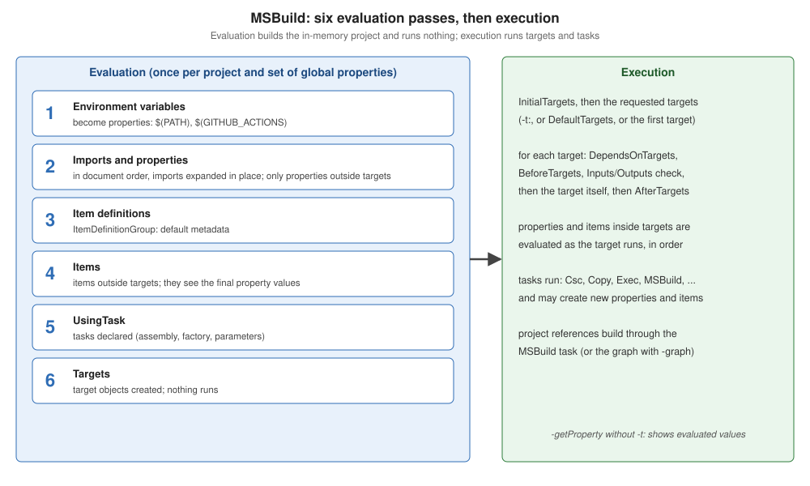

Project File Anatomy
|
This content was generated with the assistance of AI and should be verified against the official documentation before being relied on in production. |
An MSBuild project file is an XML document with one root, <Project>, and a handful of element types. Two of them hold
data (properties and items), one holds work (targets, made of tasks), and the rest organise the file
(imports, SDKs, task declarations, conditional groups). This page names every element, explains when MSBuild reads each
one, and builds the Ledgerline library twice with MSBuild 18.9 (.NET SDK 10.0.402): once from a hand-written
project that calls the C# compiler itself, and once from the five-line SDK-style project that hides all of it. The
SDK-specific defaults are on
SDK-Style Project Files.
The elements
| Element | Purpose | Read during |
|---|---|---|
|
The root. Attributes, all optional: |
evaluation |
|
Name—value pairs: |
evaluation (outside targets), execution (inside targets) |
|
Typed lists with metadata: |
evaluation (outside targets), execution (inside targets) |
|
Default metadata for an item type |
evaluation (pass 3) |
|
A named, ordered list of tasks with |
defined during evaluation, run during execution |
task elements ( |
A call to a .NET class implementing |
execution |
|
Inlines another MSBuild file at this point; |
evaluation (pass 2) |
|
Adds a project SDK (an implicit |
evaluation |
|
Declares a task: its class name and the assembly or task factory that provides it |
evaluation (pass 5) |
|
If/else around |
evaluation |
|
Arbitrary XML that MSBuild ignores; tools store data here |
never |
Every element in one project
A short project that touches each element — it reports the Ledgerline chart of accounts for a period:
<Project DefaultTargets="Report" InitialTargets="CheckCurrency">
<!-- Import: inlines another MSBuild file at this point of the evaluation. -->
<Import Project="ledger.props" />
<PropertyGroup>
<Period>first quarter 2026</Period>
</PropertyGroup>
<!-- ItemDefinitionGroup: default metadata for every item of a type. -->
<ItemDefinitionGroup>
<Account>
<Kind>asset</Kind>
</Account>
</ItemDefinitionGroup>
<ItemGroup>
<Account Include="1000-Cash" />
<Account Include="3000-Equity" Kind="equity" />
<Account Include="6000-Rent" Kind="expense" />
</ItemGroup>
<!-- Choose/When/Otherwise: if/else for property and item groups. -->
<Choose>
<When Condition="'$(Currency)' == 'EUR'">
<PropertyGroup>
<Symbol>€</Symbol>
</PropertyGroup>
</When>
<Otherwise>
<PropertyGroup>
<Symbol>$(Currency) </Symbol>
</PropertyGroup>
</Otherwise>
</Choose>
<!-- UsingTask: declares a task; here an inline one compiled from C#. -->
<UsingTask TaskName="Upper" TaskFactory="RoslynCodeTaskFactory" AssemblyFile="$(MSBuildToolsPath)/Microsoft.Build.Tasks.Core.dll">
<ParameterGroup>
<Text ParameterType="System.String" Required="true" />
<Result ParameterType="System.String" Output="true" />
</ParameterGroup>
<Task>
<Code Type="Fragment" Language="cs">Result = Text.ToUpperInvariant();</Code>
</Task>
</UsingTask>
<Target Name="CheckCurrency">
<Error Condition="'$(Currency)' == ''" Text="Currency is not set." />
</Target>
<Target Name="Report">
<Upper Text="$(Period)">
<Output TaskParameter="Result" PropertyName="PeriodTitle" />
</Upper>
<Message Importance="high" Text="Trial balance $(PeriodTitle) in $(Symbol)" />
<Message Importance="high" Text=" %(Account.Identity) (%(Account.Kind))" />
</Target>
<!-- ProjectExtensions: free-form XML that MSBuild ignores (tools store data here). -->
<ProjectExtensions>
<LedgerlineTool><LastExport>2026-01-31</LastExport></LedgerlineTool>
</ProjectExtensions>
</Project>with ledger.props setting <Currency>EUR</Currency>. Run with no target, with a global property, and with the
property emptied:
dotnet msbuild tour.proj -nologo -v:m
dotnet msbuild tour.proj -nologo -v:m -p:Currency=USD
dotnet msbuild tour.proj -nologo -v:m -p:Currency= Trial balance FIRST QUARTER 2026 in €
1000-Cash (asset)
3000-Equity (equity)
6000-Rent (expense)
Trial balance FIRST QUARTER 2026 in USD
~/tour/tour.proj(48,5): error : Currency is not set.What happened: no -t: was given, so DefaultTargets chose Report; InitialTargets ran CheckCurrency before it in
all three runs; 1000-Cash got its Kind from the item definition; %(Account.Identity) made the second Message
run once per account (batching, see
Incremental Builds and Batching);
and the -p: global property overrode the value the imported file set — even when that value was empty, which is
why the third run failed.
Source: Walkthrough: Use MSBuild, Project element.
Evaluation, then execution
MSBuild reads a project in two phases (the full description is on How a .NET Build Works):

Two rules follow, and most "my property is ignored" questions are one of them:
-
Outside targets, all properties are evaluated before any item, in document order with imports expanded in place. A property can use earlier properties, never later ones; items always see the final property values.
-
Inside a target, property and item groups are evaluated together, top to bottom, when the target runs. Order now matters for items too:
<Project>
<Target Name="Show">
<!-- Inside a target, groups are evaluated top to bottom as the target runs. -->
<PropertyGroup>
<JournalVersionTooEarly>@(Journal->'%(Version)')</JournalVersionTooEarly>
</PropertyGroup>
<ItemGroup>
<Journal Include="2026-01.ledger.csv" Version="3" />
</ItemGroup>
<PropertyGroup>
<JournalVersion>@(Journal->'%(Version)')</JournalVersion>
</PropertyGroup>
<Message Importance="high" Text="too early: [$(JournalVersionTooEarly)] after the item: [$(JournalVersion)]" />
</Target>
</Project> too early: [] after the item: [3]Outside a target the same property would have worked in either order, because an item expression in a property defined during evaluation is stored as text and expanded only when used.
Ledgerline without an SDK
The SDK is just MSBuild code, so nothing stops a project from doing the SDK’s job by hand. This project compiles the
Ledgerline library sources for .NET 10 with the Csc task (which every project can use: it is registered in
Microsoft.Common.tasks, which MSBuild loads by default), referencing the reference assemblies of the
Microsoft.NETCore.App.Ref targeting pack installed next to the SDK:
<Project DefaultTargets="Build">
<!-- Properties: set during evaluation, read with $(Name). -->
<PropertyGroup>
<AssemblyName>Ledgerline</AssemblyName>
<Configuration Condition="'$(Configuration)' == ''">Debug</Configuration>
<OutputPath>bin/$(Configuration)/</OutputPath>
<IntermediateOutputPath>obj/$(Configuration)/</IntermediateOutputPath>
<!-- The reference assemblies of .NET 10, from the targeting pack installed next to the SDK
($(MSBuildBinPath) is <dotnet>/sdk/10.0.402 when run by dotnet msbuild). -->
<RefPackDir>$([MSBuild]::NormalizeDirectory($(MSBuildBinPath), '..', '..', 'packs', 'Microsoft.NETCore.App.Ref', '10.0.13', 'ref', 'net10.0'))</RefPackDir>
</PropertyGroup>
<!-- Items: lists of files (or anything else), read with @(Type). -->
<ItemGroup>
<Compile Include="*.cs" />
<Reference Include="$(RefPackDir)*.dll" />
<GlobalUsing Include="System;System.Collections.Generic;System.IO;System.Linq" />
</ItemGroup>
<!-- A target is a named list of tasks; Inputs/Outputs make it incremental. -->
<Target Name="Build"
Inputs="@(Compile)"
Outputs="$(OutputPath)$(AssemblyName).dll">
<MakeDir Directories="$(OutputPath);$(IntermediateOutputPath)" />
<WriteLinesToFile File="$(IntermediateOutputPath)GlobalUsings.g.cs"
Lines="@(GlobalUsing->'global using %(Identity)%3B')"
Overwrite="true" />
<Csc Sources="@(Compile);$(IntermediateOutputPath)GlobalUsings.g.cs"
References="@(Reference)"
TargetType="library"
LangVersion="latest"
Nullable="enable"
Deterministic="true"
OutputAssembly="$(OutputPath)$(AssemblyName).dll" />
<Message Importance="high" Text="$(AssemblyName) -> $(MSBuildProjectDirectory)/$(OutputPath)$(AssemblyName).dll" />
</Target>
<Target Name="Clean">
<RemoveDir Directories="bin;obj" />
</Target>
</Project>dotnet msbuild -nologo -v:m
dotnet msbuild -nologo -v:n | grep Skipping Ledgerline -> ~/anatomy/Ledgerline/bin/Debug/Ledgerline.dll
Skipping target "Build" because all output files are up-to-date with respect to the input files.Every line is something the SDK normally provides: the output paths, the Compile glob, the framework references, the
global usings file (%3B is an escaped ;, which would otherwise split the item list), the incremental check, and a
Clean target. The first attempt at this project left RefPackDir based on $(NetCoreRoot) — a property that only
the SDK defines — so the compiler got no references at all and failed with dozens of
error CS0518: Predefined type 'System.Object' is not defined or imported; in an SDK-less project, every property must
be defined by the project itself or by MSBuild ($(MSBuildBinPath) is a reserved property).
The same sources with the SDK:
<Project Sdk="Microsoft.NET.Sdk">
<PropertyGroup>
<TargetFramework>net10.0</TargetFramework>
<ImplicitUsings>enable</ImplicitUsings>
<Nullable>enable</Nullable>
</PropertyGroup>
</Project> Determining projects to restore...
Restored ~/anatomy/Ledgerline/Ledgerline.csproj (in 84 ms).
Ledgerline -> ~/anatomy/Ledgerline/bin/Debug/net10.0/Ledgerline.dll
Build succeeded.The SDK adds what the hand-written project skipped: restore and package references, multi-targeting, reference
assemblies, .deps.json, PDBs, analyzers, Source Link, packing and publishing.
Import in detail
<Import Project="…" /> reads another file as if its content were pasted at that point. Its properties are visible
to the elements after it; properties it sets can be overridden by elements after it. Conditions are common
(Condition="Exists('local.props')"), and the path can contain wildcards: the matches are sorted and imported in
that order, which is how extension folders such as ImportBefore\* work. A missing import is an error (MSB4019)
unless the path contains a wildcard or the import is conditioned on Exists. $(MSBuildThisFileDirectory) — the folder
of the file being evaluated — is what makes imported files location-independent.
Source: MSBuild: Import element, Wildcards.
Common mistakes
-
Defining a property after the element that reads it (outside targets) — the value is empty there.
-
Item and property groups in the wrong order inside a target — see above.
-
A
-p:that silently overrides the project — global properties win;TreatAsLocalPropertylets a project opt out for named properties. -
Overriding an SDK target in the project body —
Sdk.targetscomes later and wins; use explicit imports orAfterTargets. -
Unescaped
;,%,$,@or'in values — use%3B,%25,%24,%40,%27.